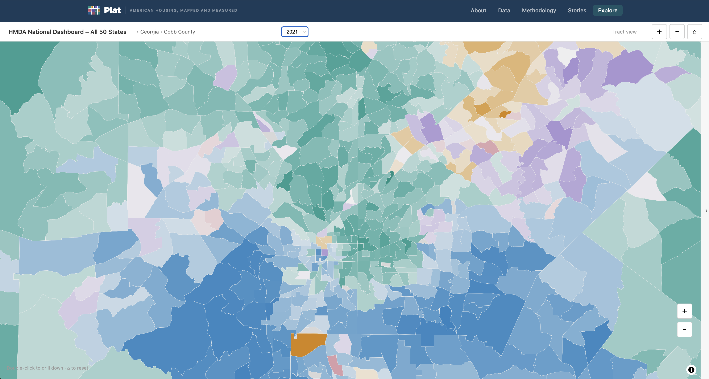
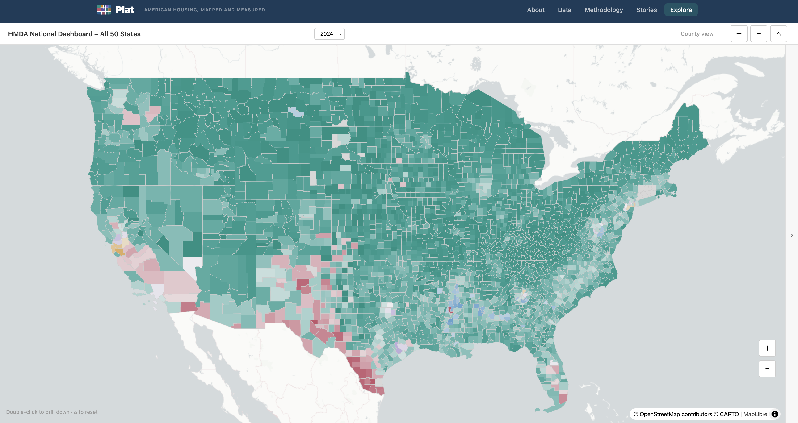

Click any county to explore the data
Clicking a county opens the charts panel — showing median income and home purchase loans by racial group over time.

Double-click to zoom into census tracts
Drill all the way down to individual census tract boundaries — the finest geographic level in the dataset.

Collapse the panel for a full map
Click the ‹ › arrow on the right edge to hide the charts panel and get a full-width map view. Click again to bring it back.